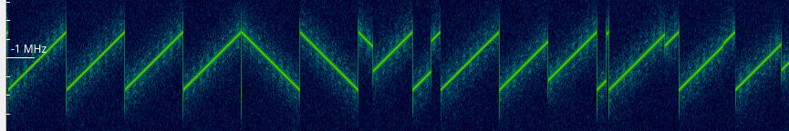
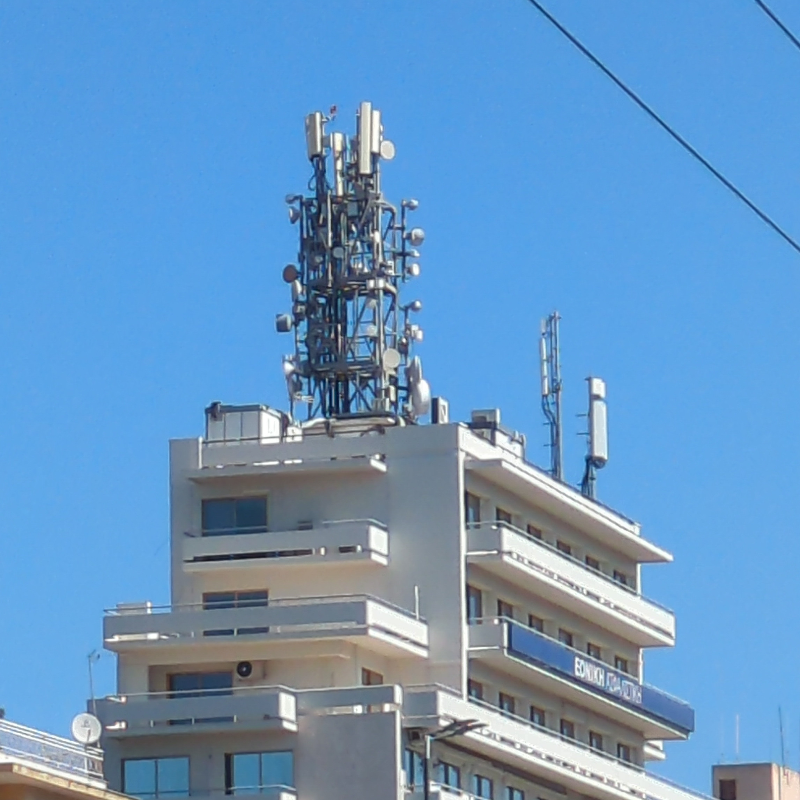

Around the RF world in 60 minutes
Dionysis Grigoropoulos
BalCCon 2k24
Slides: https://f.erethon.com/balccon2k24

Who am I
- Dionysis Grigoropoulos (dgrig or Erethon)
- https://erethon.com
- SRE by trade, hackerman at heart
- email: dgrig@erethon.com
- matrix: @dgrig:erethon.com
Radiowaves
A fascinating and invisible world around us
What is RF and RadioWaves

Electromagnetic Radiation and Radio Waves
- Theorized by James Clark Maxwell in 1865
- Maxwell's equations
- Demonstrated in 1887 by Heinrich Hertz
- First practical application in 1894 by Guglielmo Marconi
Electromagnetic Radiation and Radio Waves
- Electromagnetic Radiation: Waves of electromagnetic fields propagating through
space
- Synchronized oscillations of electric and magnetic fields
- Oscillations means Alternating Current (AC)
- We apply this current at an antenna
- Propagating at the speed of light (c) in a vacuum
Electromagnetic Radiation and Radio Waves
- Frequency, measured in Hertz (Hz)
- Wavelength, measured in meters
λ = υ/f
- As the frequency increases, the wavelength decreases
- Bandwidth
Electromagnetic and Radio Spectrum

Electromagnetic and Radio Spectrum

Electromagnetic and Radio Spectrum
- We split up the spectrum in bands based on frequency/wavelength
- Non-ionizing radiation
- It doesn't have enough energy to remove electrons from atoms or molecules
- Can potentially heat tissue though at very large power levels
Spectrogram
- Visualization of spectrum of frequencies over time
Spectrogram

Spectrogram

Spectrogram

What happens if these two signals overlap?
The spectrum is a "Finite Resource"
- ITU established in 1865, became part of UN in 1947
- Publishes the ITU Radio Regulations
- It's an International Law that countries follow and enforce
- Regulates the 9 kHz to 300GHz spectrum
- ΕΕΤΤ in Greece, RATEL in Serbia, FCC in USA, etc
Legality of radio equipment
- Varies wildly by country
- Consult your local laws
- Very blurry situation nowadays since the laws haven't kept up with technology
How does one transmit then?
- You pay for the right to transmit (TV Stations, Mobile Carriers, etc)
- You get licensed as a Radio Amateur operator in your country
- Your line of work or other reasons allow you to (Firefighters, boats, etc)
- You transmit in a part of the spectrum that's free for everyone to use (under conditions)
ISM Bands
- Introduced during the 1940s because of microwave heating
- Reserved for Industrial, Scientific, Medical purposes only, no telecommunications allowed
- However, most electronic devices use these bands nowdays
- NFC, WiFi, BT, ZigBee, LoRa, 433/868 keyfobs, etc
Modulation of signals
- Information must be encoded in a carrier signal that is suitable for transmitting

Modulation of signals
- Multiple modulation exist, from simple ones, to very complex and even proprietary ones

Antennas
- Antennas come in all shapes and sizes
- Size depends on the frequency (wavelength) of signal
- Bluetooth, WiFi, etc, 2.4GHz -> 12.5cm
- Analog FM broadcasting, 87-108MHz -> 3m
- ELF, 3-3KHz -> ~100000-100km
Antennas

Antennas

Antennas

Antennas

Antennas

Antennas

Exploring and capturing this world

- Radiowaves are the definition of untrusted input!
- Lots of radio related software is not written in memory safe languages or with security in mind
Hardware
- Hardware that's built to receive and/or transmit signals of specific frequencies and modulation(s)
- Usually locked down, communicate with it via a higher level interface
- Bluetooth, WiFi, ZigBee, LoRa, CC1110, CC2531, etc
- Software Defined Radio
Software Defined Radio
- The hardware is now "dumb" and only captures the analog signal of the carrier, digitizes it and passes it to software on the computer.
- The computer then does all the "smart" and computational heavy processes, like demodulation, decoding, etc.
- Works on smartphones…
A revolution in cost and accessibility
- RTL-SDR, a driver for a cheap (20-30$) USB digital TV receiver

Software
GNU Radiois the golden standard, but requires lots of know-how

Software
- gqrx, CubicSDR, etc

Software
InspectrumandUniversal Radio Hackerfor inspecting and reverse engineering signalsrtl_433for decoding a lot of cheap sensors
"Gamified"/handheld solutions
Flipper ZeroHackRFwith aportapackPwnagotchi
Privacy
- Finally!
- Most of our electronic devices are transmitting some kind of signal nowadays (on purpose)
WiFi
Bluetooth
NFC, CCs, passports, IDs
Smart Homes
ZigBee
Smart appliances, bluetooth toothbrush
rf54nl, Lino's Keyboard
Tire pressure sensors
RTL 433, weather stations
RFID 900 ISO18000-6c
902 - 928 Smart meters, recessim
GSM
ZigBee
- 2.400MHz - 2.4835Mhz
- 16 channels
- 2MHz BW, 5MHz apart
- Trust on first use
- https://www.nxp.com/docs/en/supporting-information/MAXSECZBNETART.pdf
BLE
- 40 channels, 37 used for data, 3 used for advertisements
LoRa
TODO Research if iPhones flood random Bluetooth BSSIDs
Notes
Jokes
- Remember, it's not hoarding if it's organized
- Look at me, I'm the keyboard now
- TPM reports
AirTags
IoT Smart Cities
Mesh4G in the UK
Physics
Electromagnetic fields
When current passes through a conductor, it generates an electromagnetic field around it. This field propagates in space.
- Wavelength = c / f
- 300000000 / 1
- 300000000 / 24000000000 = 0.125m
- 300000000 / 90000000 = 3.33m
- This is why phones require headphones to pick up radio stations
Out of topic but interesting
- Radio waves of the universe
- Radio telescopes